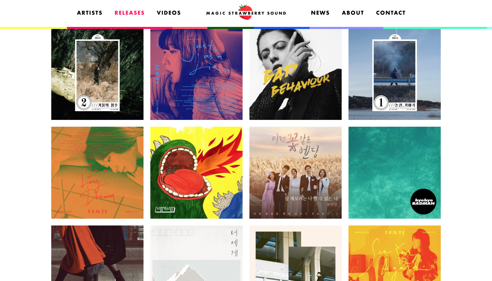

기업의 색깔과 성장 스토리를 잘 담은 사이트라고 생각한다.
영상의 활용도 또한 높다.
홈 화면에서 소속 가수들의 신곡과 공연 소식을 전체 화면 크기의 이미지로 노출한다.
흥미로운 점은 아래와 같이 소속 가수, 역대 앨범 및 영상을 아카이빙 하는 페이지가 있다는 것이다.

선명하고 보기 좋은 이미지가 이목을 끈다.
콘텐츠를 크게 쇼핑 파트와 브랜드 소개 파트로 구분한다.
브랜드의 역사, 사명, 취급 법 등을 이미지와 함께 이야기 형태로 전달한다.
주요 콘텐츠는 공연・전시의 정보이다.
문화 예술인들의 참여와 지원을 독려하는 홈페이지로 운영되고 있다.
인물, 문화, 카툰 등 다양한 읽을거리를 제공하는 매거진 형태의 ‘웹진’ 파트가 있다.
편집 디자인, 다양한 인쇄 제본의 종류에 대한 페이지를 제작할 예정이다.
다양한 제본 방식을 정리하여 소개하고 싶어졌다.
리서치 단계에서 살펴본 사이트들을 참고하여
스토리가 있으면서도 사례들을 다양하게 살펴볼 수 있는 유용한 사이트로 만들고 싶다.
디지털퍼블리싱 1
2016286039 윤정민